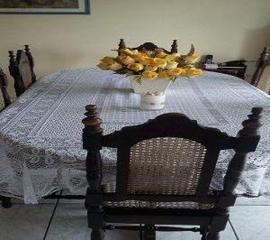

Nossas Instalações
Conheça um pouco do nosso espaço.
A Agência Nacional de Vigilância Sanitária (Anvisa) criou uma resolução em 2005, na qual obrigada que as casas tenham registro atualizado junto à Anvisa. Além disso, se as mesmas têm o alvará de funcionamento expedido pela vigilância sanitária do município. Outras obrigatoriedades são:
- As casas devem possuir corrimãos e pisos adequados;
- Janelas com grades ou redes de proteção;
- Alas separadas para homens e mulheres;
- Campainha de alarme próximo à cama do idoso, para que ele possa solicitar ajuda do cuidador sempre que for necessário e em qualquer hora do dia ou da noite;
- Medicamentos necessários para a saúde ou tratamento de doenças do idoso;
- Procedimentos anotados em fichas para que, em casos de demissões de funcionários ou troca de turno, o idoso receba a devida assistência.
